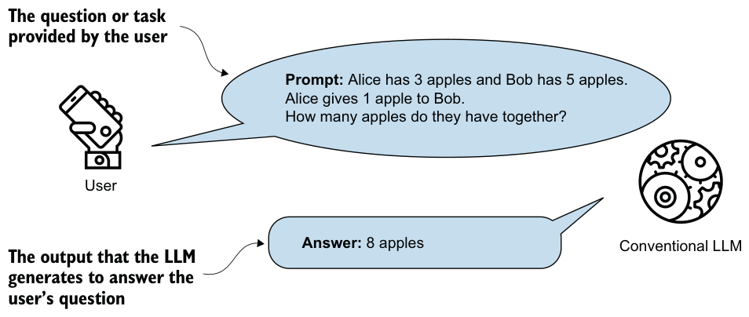
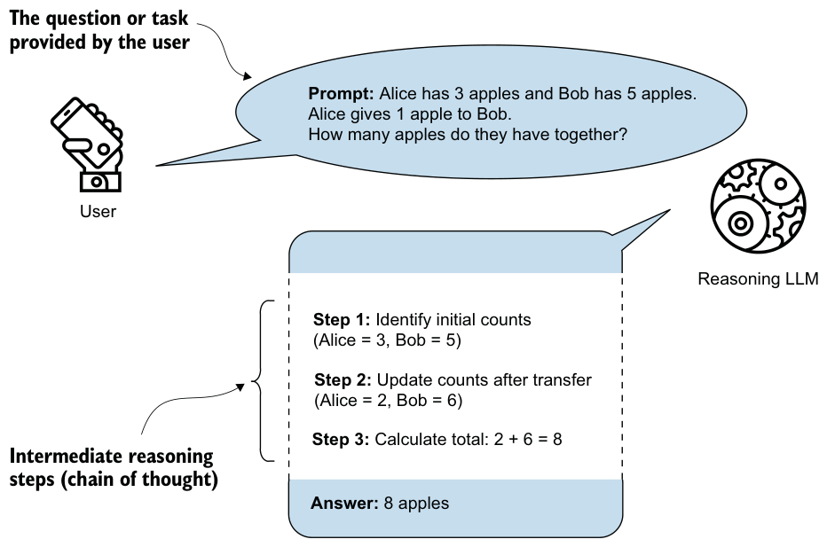

1.1Defining reasoning in the context of LLMs
In this book, I use the term reasoning in a practical engineering sense rather than a philosophical one. In the context of LLMs, reasoning refers to a model generating intermediate steps before producing its final answer.
These intermediate steps may appear as visible step-by-step explanations, or they may be enclosed in special tags such as <think>...</think> and be hidden from the user. In either case, the core idea remains the same. The model is encouraged or trained to use tokens for intermediate problem-solving steps rather than jumping directly to the conclusion.
Correspondingly, I use reasoning model to mean an LLM that has been improved, either through training or prompting techniques, to produce such intermediate steps, which often increases accuracy on complex tasks such as coding, logical puzzles, and math problems.
Before we get to the coding portions of this book, I will briefly discuss the main techniques that improve these reasoning behaviors and how they relate to pattern matching and logical reasoning. This will lay the groundwork for later discussions of how LLMs are currently built, how they handle reasoning tasks, and what they are and are not so good at.
Chain-of-thought (CoT)
Figure 1.1 illustrates how a conventional LLM generates the answer to a user’s question. A conventional LLM might not show how it came up with its answer, and while the answer might be correct, it doesn’t help the user understand the process behind it.

Figure 1.2 illustrates a simple example of multistep (CoT) reasoning in an LLM. The LLM-produced intermediate reasoning steps look very much like a person articulating internal thoughts aloud. How closely these methods (and the resulting reasoning processes) mirror human reasoning remains an open research question, one this book does not attempt to answer.
While figure 1.2 is a typical example of chain-of-thought reasoning, it’s important to emphasize that LLM reasoning differs from traditional, deterministic reasoning. For instance, a symbolic logic engine or theorem prover follows strict, rule-based steps that guarantee consistency and correctness. It works like following a recipe in which every step is fixed and must produce the same result each time. If you follow the steps exactly, you will always end up with the same dish.

In contrast to a symbolic logic engine, an LLM generates reasoning autoregressively, which means it predicts one token at a time based on statistical patterns in its training data. As a result, the LLM’s “reasoning steps” are not guaranteed to be logically sound, even if they look convincing.
This book focuses on explaining and implementing the fundamental techniques that improve LLM-based reasoning and make LLMs better at handling complex tasks.
My hope is that by gaining hands-on experience with these methods, you will be better prepared to understand and improve the reasoning methods being developed and maybe even explore how they compare to human reasoning.